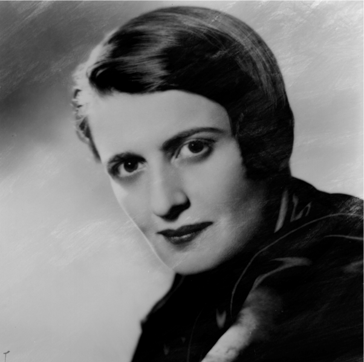

Ayn Rand
Ayn Rand nascida Alisa Zinov'yevna Rozenbaum, em russo: Алиса Зиновьевна Розенбаум; (São Petersburgo, 2 de fevereiro de 1905 — Nova Iorque, 6 de março de 1982) foi uma escritora, dramaturga, roteirista e filósofa norte-americana de origem judaico-russa, mais conhecida por desenvolver um sistema filosófico chamado de Objetivismo, e por seus romances. Ela teve sua primeira peça produzida na Broadway em 1932. Depois de dois primeiros romances que inicialmente não tiveram sucesso, ela alcançou fama com seu romance de 1943, The Fountainhead (A Nascente). Em 1957, Rand publicou seu trabalho mais conhecido, o romance Atlas Shrugged (A Revolta de Atlas). Posteriormente, ela se voltou para a não-ficção para promover sua filosofia, publicando seus próprios periódicos e lançando várias coleções de ensaios até sua morte em 1982.
Rand defendeu a razão como o único meio de adquirir conhecimento e rejeitou a fé e a religião. Ela apoiou o egoísmo racional e ético e rejeitou o altruísmo. Na política, ela condenou a iniciação da força como imoral e se opôs ao coletivismo e ao estatismo, bem como ao anarquismo, em vez disso apoiando o capitalismo laissez-faire, que definiu como o sistema baseado no reconhecimento dos direitos individuais, incluindo os direitos de propriedade. Na arte, Rand promoveu o realismo romântico. Ela criticava fortemente a maioria dos filósofos e tradições filosóficas conhecidas por ela, com exceção de Aristóteles, Tomás de Aquino e liberais clássicos.
Críticos literários receberam a ficção de Rand com críticas misturadas, tendo a academia ignorado em um primeiro momento sua filosofia, muito embora o interesse acadêmico tenha aumentado nas últimas décadas. O movimento objetivista tenta espalhar suas ideias, tanto para o público quanto em contextos acadêmicos. Ela tem sido uma influência significativa entre libertários, liberais clássicos e conservadores americanos.